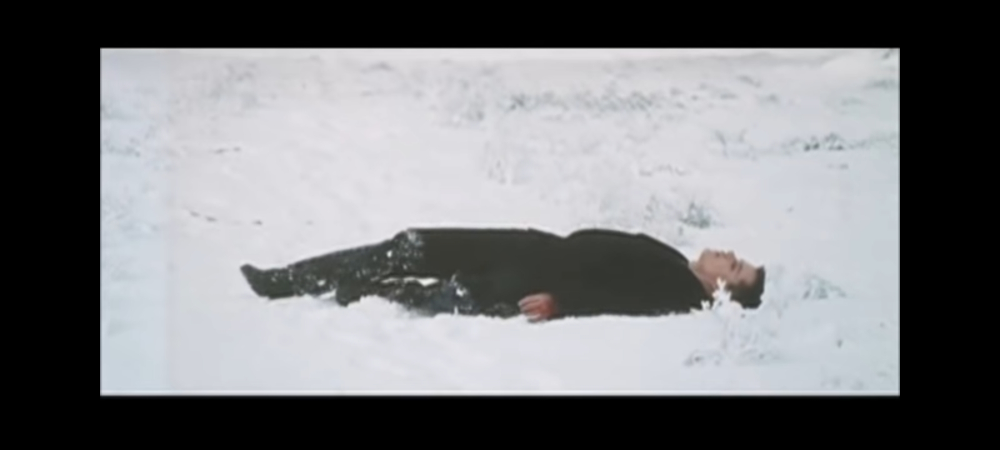
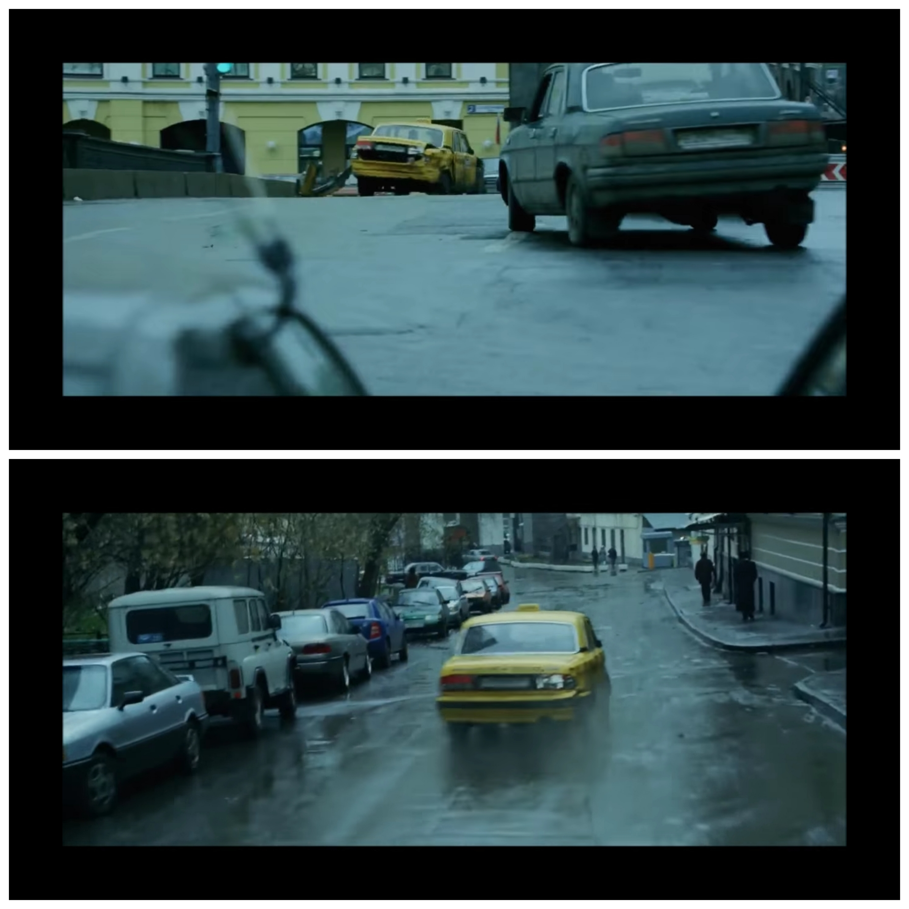
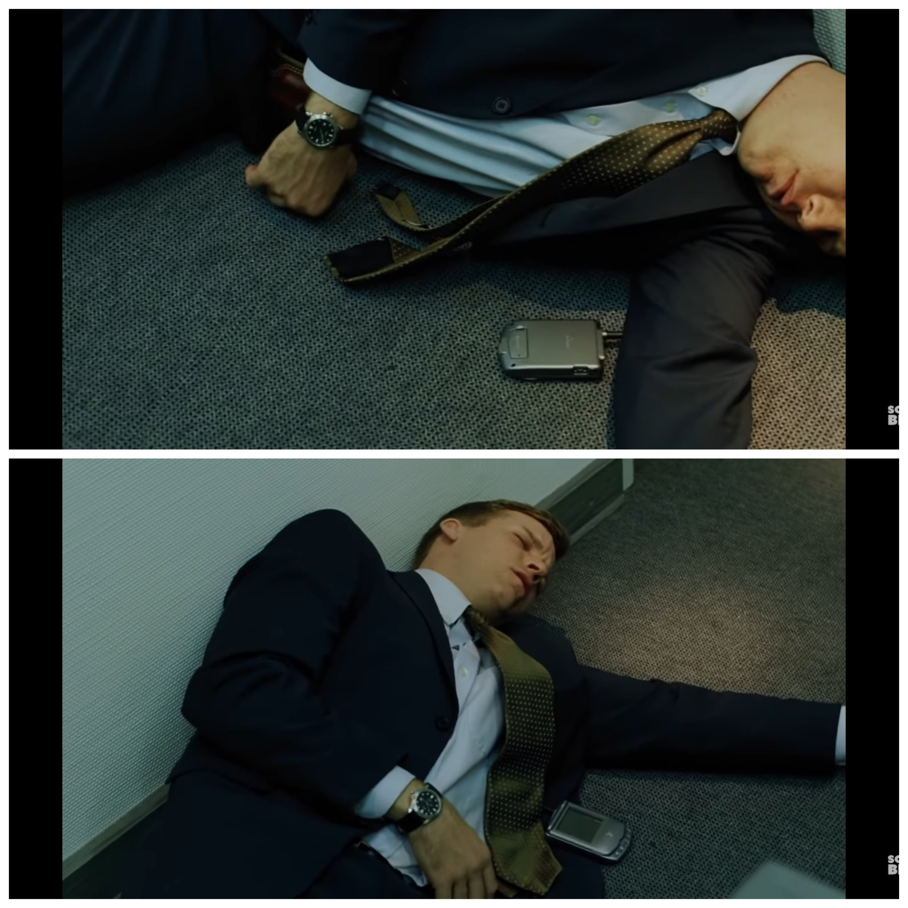

Hidden Alternative Ending

The DVD contains an alternate ending on a file hidden on the DVD(not in the DVD menu). It has Bourne collapsing in the Moscow park after confessing to Neski's daughter, waking up in a hospital, and being told his real name by Landy, before he escapes.
-
Bourne's Car Rear BumperIn the Moscow car chase, when Bourne's car is hit by a FSB Mercedes, the rear bumper of his vehicle is seen torn off. In a later shot, the rear bumper is still intact.
-
Phone FlipAfter escaping interrogation Bourne switches SIM cards and throws the phone back down with it facing down. When we see the American awake the phone is now facing upwards.